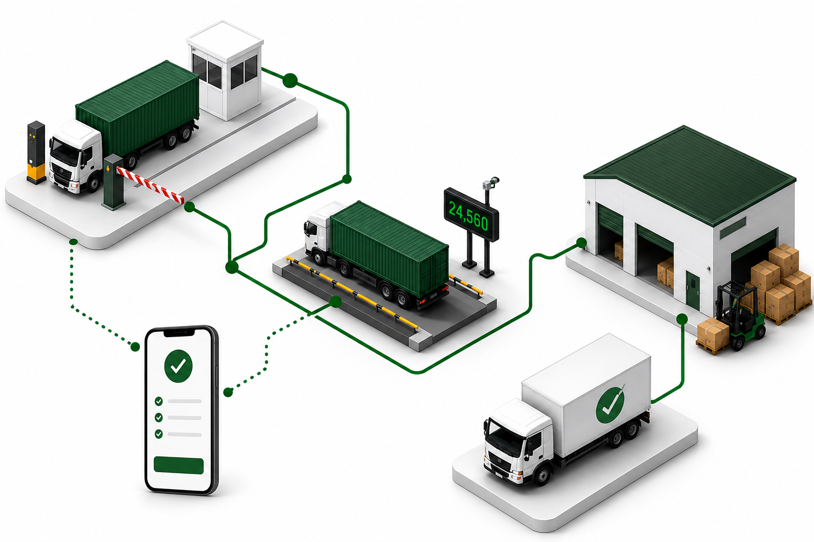

Logistics execution platform
Control Every Cargo Movement, from Gate to Dispatch.
CargoMan gives terminals, depots, warehouses, and weighbridge operations one operational record for every cargo movement - connecting the truck, order, weight, cargo, container, evidence, and dispatch as the operation happens.

Where the gaps appear
When Cargo Operations Grow, the Gaps Appear Between Systems.
Cargo operations rarely fail because there is no software. They become difficult when each part of the operation records a different version of the same movement.
The gate knows the truck arrived, but the warehouse does not.
Arrival information is often captured separately from receiving or dispatch.
A weight is captured, but somebody still has to link it back to the order.
Disconnected records create manual reconciliation and incorrect allocations.
Photos and evidence sit outside the transaction.
When a dispute occurs, operations has to reconstruct what happened from emails and folders.
CargoMan connects these handovers into one controlled operational process.
One platform across the movement
The Same Record, from First Arrival to Final Dispatch.
A truck arriving at the gate should not create an isolated gate record. The same movement continues through weighing, receiving, stock, and dispatch while retaining its operational context.
Plan the Movement
Create or import the order, booking reference, cargo allocation, expected truck, or other pre-advice information before the vehicle reaches the site.
Control Arrival
Match the arriving vehicle to the expected movement, confirm the driver and transporter, complete site checks, and record entry.
Capture Weight
Capture gross, tare, and nett values from the correct weighbridge transaction and associate the reading with the vehicle, order, cargo, or container it belongs to.
Receive & Handle
Receive cargo against the correct order, capture quantities and weights, allocate lots or barcodes, record damage, and maintain stock as the operation happens.
Store & Pack
Track cargo through storage and packing, including stock status, container allocation, seals, and supporting evidence where required.
Release & Dispatch
Validate what is leaving, confirm the cargo or container, capture final operational information, and complete the dispatch or exit movement.
Monitor & Report
See live status, stock movement, balances, throughput, and audit history, with the underlying transaction and evidence available for investigation.
Not every deployment uses every stage - CargoMan is configured around the operation, not the other way around.
Core solutions
Operational Solutions Connected by One Platform.
Deploy the parts of CargoMan your operation needs today, while keeping each movement connected through the same operational platform.
Gate & Access Control
Know who and what is expected before it arrives. Match trucks to pre-advised movements, complete entry checks, and maintain a live view of vehicles and people on site.
See gate controlWeighbridge Operations
Capture the right weight against the right truck, order, booking, cargo, or container - with controlled weighing sequences, validation, and complete transaction history.
See weighbridgeWarehouse & Stock
Know what you received, what you still hold, and exactly what left - with traceability from order and lot down to item or barcode where required.
See warehouseContainer Operations
Connect the container, cargo, vehicle, seal, weight, and evidence through each configured container movement.
See containersMobile & Offline Execution
Cargo work happens at the gate, in the yard, and beside the container - not behind a desk. Supported workflows continue offline and synchronise when connected.
See mobileReporting & Analytics
Reporting is generated from the same transactions used to run the operation, reducing the gap between what happened on site and what management sees afterwards.
See reportingTraceability & evidence
Know What Happened - and Prove It.
When a weight, quantity, dispatch, or damage is questioned, the answer should not depend on finding a WhatsApp photo, paper form, or email trail. CargoMan keeps the supporting operational evidence with the transaction it belongs to.
- Item-, lot-, order-, and barcode-level chain of custody
- Scan-first capture that works where the work happens
- Mandatory or contextual photo and signature capture
- Offline-capable workflows that synchronise when connected
When something does not add up, follow the record.
Platform benefits
Built for Operations That Cannot Stop.
One Operational Record
Keep the vehicle, order, weight, cargo, container, stock, and evidence connected through the physical operation.
Control the Handovers
Validate the movement as it passes from gate to weighbridge, warehouse, container operation, and dispatch.
Site-Resilient Operation
Supported workflows can continue locally and synchronise when connectivity returns.
Multi-Site Visibility
Execute locally while maintaining central visibility and reporting across distributed operations.
Evidence by Design
Photos, signatures, damage notes, and documents remain attached to the transaction that created them.
Fits Around Existing Systems
APIs, controlled queries, SQL views, and purpose-built integrations connect CargoMan to the systems around it.
Our clients
Nationwide Impact.
Proudly powering logistics operations across South Africa.
Talk to CargoMan
Let's Map CargoMan to Your Operation.
Show us how trucks, cargo, and information move through your site. We'll map the control points and demonstrate where CargoMan can connect the process.